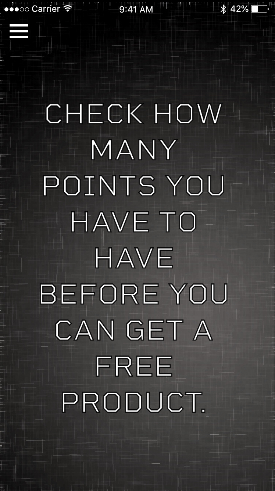
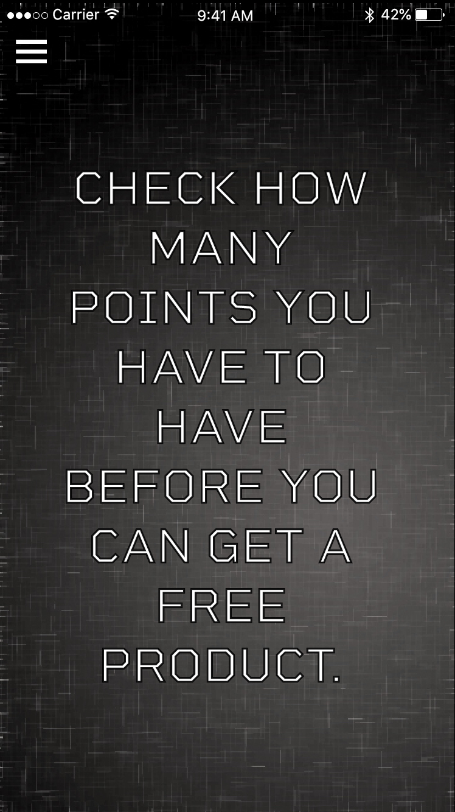

This is a prototype of an application for a restaurant. The restaurant makes handmade burgers. The prototype is made as a practise project. The main purpose of the application is that the user can collect credit points. The user can get points by buying products from the restaurant. When the user has enough points, the user can get or select a free product from the company. Due to the credit system, the user is more likely to visit the restaurant more often and become a loyal customer to the restaurant. This is a kind of a Loyalty Program. The company is an imagery one because of that the name is blurred out.
Here is also the link to the protoype Visit my protoype here


 


Protoype 2019
In this course we did a prototype of an application. The application itself was about the rules and techniques of diverging and converging in design. My goal was to design an application prototype with help of which one can easily to learn about diverting and converging rules and techniques in design. My prototype application had to be aesthetic and simple to understand.